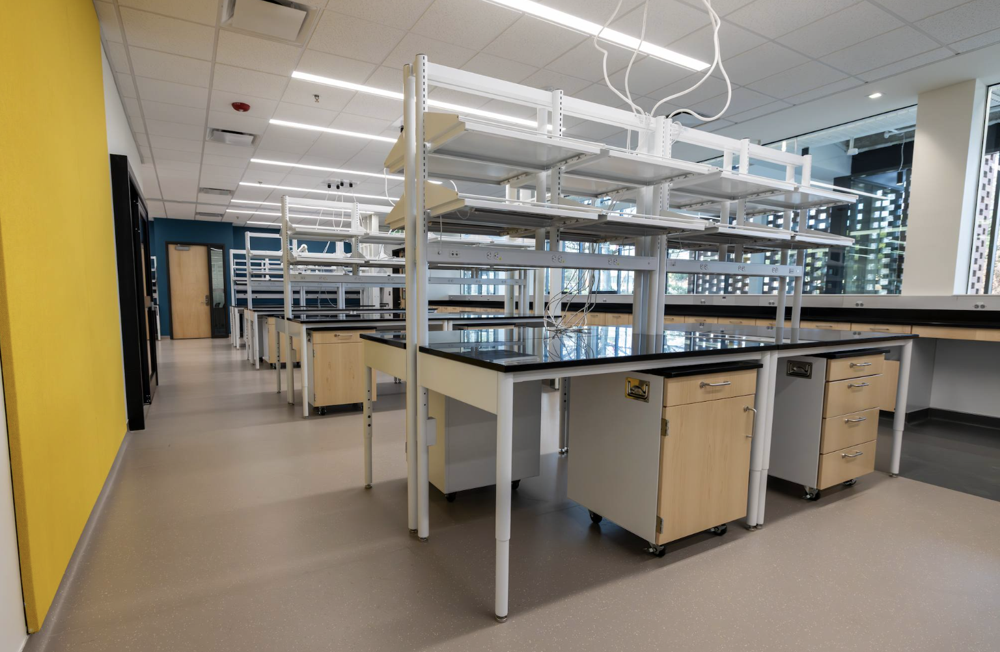
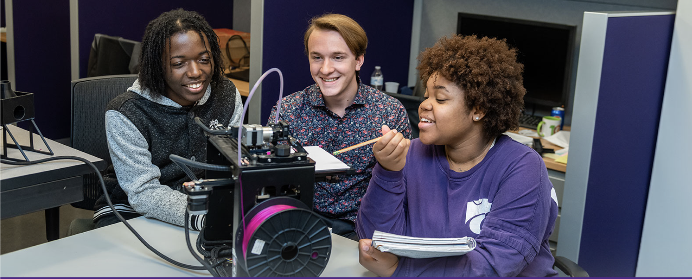
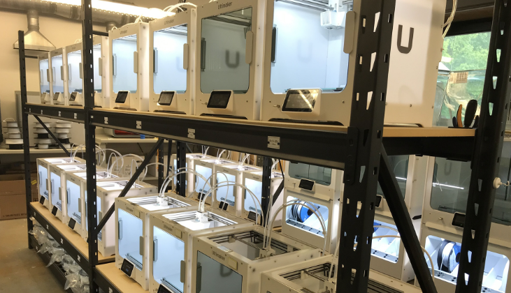

Cleanroom

The cleanroom provides controlled environments for advanced experimentation, research, and technology development.
Advanced Computing Lab

The advanced computing laboratory supports computational research, data analysis, and technology innovation projects.
High-Bay Makerspace

The makerspace provides students with tools for prototyping, design, and innovation projects.